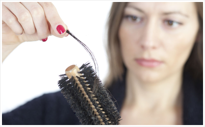

当前位置：主页 > 院内新闻 >
上海江城专家接受上海热线采访
讲述脱发相关问题
- 主持人：随着我们的生活节奏的加快，在生活当中，不断有各种各样的压力渐渐产生，同时头发会大量脱落，为此我们今天邀请到了上海江城皮肤病医院的夏风 夏主任，来和我们谈一谈关于脱发的问题...
- 主持人：夏主任你好！我们都知道，脱发是我们平时常见的一个象限，它也属于皮肤病的一种是吗？
- 夏主任：对！
- 主持人：那我想请问一下 引起脱发的主要原因会有那些呢？
- 夏主任：引起脱发的主要原因，一个是生活习惯、工作 学习上的压力 休息以及睡眠方面都有很大的关联，脱发的原因很多，有生理性脱发也有病理性脱发，病理性脱发有 斑脱，有脂溢性脱发，也有早脱还有普脱（就是整个眉毛胡子全脱）主持人：就是说眉毛 胡子都会脱夏主任：嗯 这也是最严重的一种，叫普脱，就是整个有毛的地方都会脱掉主持人：那是不是只有成年人才会有这样的现象呢？
- 夏主任：小孩也会有，我们最小的患者 大概在六七岁都有，都会产生这种脱发主持人：六七岁的时候就会有这种现象发生，那是很恐怖的夏主任：对，对…主持人：那接下来我想请问一下夏主任，我们每天都会有一些掉头发，我想请问一下，掉多少的头发才会属于脱发的一种呢？
- 夏主任：掉多少没有一个统一的规定 一般就是看每个人的头发的多少，头发多的人掉一点就感觉不出来，头发少的掉了一点就感觉出来，这要看每个人每天掉多少，自己感觉头发比原来少了很多，这就要注意啦 ，这种现象就是要脱发了。
- 主持人：我们平时就是洗头 或者是梳头的时候，都经常会掉一些头发夏主任：一般一天掉十几二十根，那是新陈代谢，那是正常的掉发，那个没问题。如果头发了一定数量，那我们就要注意啦，你就在掉发啦主持人：那要是说来还是相对明显的 对不对夏主任：就是你要看到自己头发掉太多啦，头皮都能看出来，那么就是脱发蛮严重的主持人：如果到头皮都看能出来的话，我想也没有多少时间可以掉了，应该及时的去治疗夏主任：就是 对主持人：那我们请问一下关于脱发的问题，我们平时生活中要怎么去注意并且去控制一下呢？
- 夏主任：脱发的治疗是治疗的要早，疗效要好，头发恢复的越好，治疗周期越短，如果晚的话，治疗的周期越长，而且恢复效果也不好，那我们上海江城皮肤病医院呢，通过我们治疗呢 一个是中药治疗，再一个通过局部雾化加纳米波治疗，基本上可以恢复，但是一部分 通过治疗会稳定巩固以后，我们上海江城皮肤病医院皮肤医院可以采用 精细纤维毛囊移植法，使患者基本恢复，解除患者的后顾之忧主持人：谢谢，所以说，病还是要从浅中医的，今天
 新浪微博
新浪微博 腾讯微博
腾讯微博 在线咨询
在线咨询 网上预约
网上预约 专家详细介绍
专家详细介绍